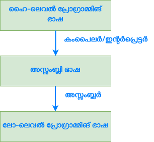

അധിക വായനക്ക്
പ്രോഗ്രാമ്മിങ് ഭാഷ (Programming Language): കമ്പ്യൂട്ടറിനെക്കൊണ്ട് നമുക്കാവശ്യമായ പ്രവര്ത്തികള് ചെയ്യാനാവശ്യമായ നിര്ദേശങ്ങള് പ്രത്യേക വ്യാകരണ നിയമങ്ങള്ക്കും പദഘടനയ്ക്കും (syntax) അനുസൃതമായി എഴുതുകയും അതുപയോഗിച്ചു കമ്പ്യൂട്ടറുമായി ആശയ വിനിമയം നടത്തുകയുമാണ് പ്രോഗ്രാമ്മിങ് ഭാഷകള് ചെയ്യുന്നത്.
മെഷീന് ഭാഷ (Machine Language): കംപ്യൂട്ടറിന്റെ പ്രോസസ്സര് വിവരങ്ങള് മനസ്സിലാക്കുകയും വിവരങ്ങള്ക്കുമേല് പ്രവര്ത്തിക്കുകയും ചെയ്യുന്നത് ദ്വയാങ്ക സംഖ്യാ സമ്പ്രദായം (Binary Number System) അധിഷ്ഠിതമാക്കിയാണ്. അതിനാല് തന്നെ കമ്പ്യൂട്ടര് പ്രവര്ത്തിക്കാന് ആവശ്യമായ നിര്ദേശങ്ങളും വിവരങ്ങളും ദ്വയാങ്ക സംഖ്യകള് ആയിരിക്കണം. ഇത്തരത്തില് ദ്വയാങ്ക സംഖ്യകള് മാത്രം അടങ്ങിയ നിര്ദേശങ്ങളും വിവരങ്ങളും പരസ്പരം മാറിപ്പോകാതെ പ്രവര്ത്തിക്കണം എങ്കില് അതിന് പ്രത്യേക നിയമങ്ങള് പാലിക്കണം. ഇത്തരം നിയമങ്ങള്ക്ക് അനുസൃതമായി ദ്വയാങ്ക സംഖ്യാ സമ്പ്രദായത്തില് പ്രവര്ത്തിക്കുന്ന ഭാഷയാണ് മെഷീന് ഭാഷ.
അസ്സംബ്ലി ഭാഷ (Assebly Language): മുകള്പ്പറഞ്ഞ രീതിയില് നിര്ദേശങ്ങളും വിവരങ്ങളും ദ്വയാങ്ക സംഖ്യകള് ഉപയോഗിച്ച് കൈകാര്യം ചെയ്യുക എളുപ്പമുള്ള കാര്യമല്ല. അതിനാല് നിര്ദേശങ്ങളും വിവരങ്ങളും ഓര്മയില് സൂക്ഷിക്കാന് പ്രോഗ്രാമ്മാറിന് ഇംഗ്ലിഷ് പോലുള്ള ഭാഷകളിലെ പദങ്ങളുടെ സഹായം ആവശ്യമാണ്. ഇത്തരത്തില് പദങ്ങളെ ആണ് നെമോണിക്സ് (Mnemonics) എന്ന് പറയുന്നത്. ഈ നേമോണിക്സുകളുടെയും ഹെക്സാഡെസിമല് സംഖ്യകളുടെയും സഹായത്തോടെ മെഷീന് ഭാഷയ്ക്ക് ഒരു പുതിയ മാനം കൈവന്നു. ഇതാണ് അസ്സംബ്ലി ഭാഷ.
ഹൈ-ലെവല് പ്രോഗ്രാമ്മിങ് ഭാഷ (High-level Language): ഹൈ-ലെവല് പ്രോഗ്രാമ്മിങ് ഭാഷ ഇംഗ്ലിഷ് പോലെ തന്നെയുള്ള പദഘടന പ്രോഗ്രാമ്മിന് നല്കുന്നു. അതിനാല് തന്നെ ഇതിന്റെ വ്യാകരണം പ്രോഗ്രാമ്മെറിന് ഓര്ത്തിരിക്കാന് പ്രോഗ്രാമറിന് വളരെ എളുപ്പമാണ്.
ബൈറ്റ്കോഡ് (Bytecode): ഹൈ-ലെവല് പ്രോഗ്രാമ്മിങ് ഭാഷയുടെയും മഷീന് ലെവല് പ്രോഗ്രാമ്മിങ് ഭാഷയുടെയും ഇടയിലുള്ള പ്ലാറ്റ്ഫോമിനെ ആശ്രയിക്കാതെ (platform independent) ആയി പ്രവര്ത്തിക്കുന്ന കോഡ് ആണ് ബൈറ്റ്കോഡ് (Bytecode)
ട്രാന്സ്ലേറ്ററുകള് (കംപൈലര്, ഇന്റര്പ്രെട്ടര്, അസ്സംബ്ലര്)
-
നമ്മള് നേരത്തെ പറഞ്ഞിരുന്നു കംപ്യൂട്ടറുകള്ക്ക് അഥവാ പ്രോസെസ്സറുകള്ക്ക് മനസ്സിലാകുന്നത് ദ്വയാങ്ക സംഖ്യാ സമ്പ്രദായത്തില് അധിഷ്ഠിതമായ മെഷീന് ഭാഷയാണെന്ന്. അതിനാല് തന്നെ ഹൈ-ലെവല് പ്രോഗ്രാമ്മിങ് ഭാഷയില് എഴുതിയ പ്രോഗ്രാം മെഷീന് ഭാഷയിലേക്കും തിരിച്ചും ഡീകോഡ് ചെയ്യുകയും വിവര്ത്തനം (Translate) ചെയ്യപ്പെടുകയും വേണം. ഇത് ട്രാന്സ്ലേറ്ററുകള് എന്നറിയപ്പെടുന്ന ഒരു പറ്റം പ്രോഗ്രാമ്മുകളുടെ സഹായത്തോടെയാണ് സാധ്യമാകുന്നത്. ട്രാന്സ്ലേറ്റര് എന്നതില് കംപൈലര് (Compiler), ഇന്റര്പ്രെട്ടര് (Interpreter), Assembler (Assembler) തുടങ്ങിയവയില് ഏതെങ്കിലും ഒന്നാകാം.
-
ഒരു കംപൈലര് ഹൈ-ലെവല് പ്രോഗ്രാമ്മിങ് ഭാഷയില് എഴുതപ്പെട്ട മുഴുവന് പ്രോഗ്രാമ്മിനെയും (സോര്സ് കോഡ്) മെഷീന് ഭാഷയായി (ഒബ്ജക്റ്റ് കോഡ്) പ്രോഗ്രാം പ്രവര്ത്തനം ആരംഭിക്കുന്നതിന് മുമ്പ് വിവര്ത്തനം ചെയ്യുന്നു. ഈയൊരു പ്രക്രിയയാണ് കംപൈല് ചെയ്യുക എന്നതുകൊണ്ട് ഉദ്ദേശിക്കുന്നത്. അതിനാല് തന്നെ സിസ്റ്റത്തില് പ്രോഗ്രാം പ്രവര്ത്തനം ആരംഭിക്കുന്നതിന് മുന്നേ തന്നെ പ്രോഗ്രാമ്മിന്റെ ഒബ്ജക്റ്റ് കോഡ് (എക്സിക്യൂട്ടബിള് ഫയല്) തയാറായിരിക്കും. കൂടാതെ പ്രോഗ്രാം പ്രവര്ത്തിക്കുന്നത് ഈ ഒബ്ജക്റ്റ് കോഡിന്റെ സഹായത്തോടെ ആയിരിയ്ക്കും. കംപൈല് ചെയ്തു കഴിഞ്ഞ ശേഷം ഈ എക്സിക്യൂട്ടബിള് ഫയല് റണ് ചെയ്യാനായി പിന്നീട് കംപൈലറിന്റെ ആവശ്യമില്ല. കൂടാതെ ഈ എക്സിക്യൂട്ടബിള് ഫയല് അതേ സ്വഭാവമുള്ള മറ്റൊരു കംപ്യൂട്ടറിലും പ്രശ്നങ്ങളില്ലാതെ പ്രവര്ത്തിക്കും എന്നുള്ളത് മറ്റൊരു മേന്മയാണ്.
-
ഇന്റര്പ്രെട്ടര് സോര്സ് കോഡ് മുഴുവനായി വായിക്കുന്നതിന് പകരം സോര്സ് കോഡിലെ ഓരോ വരികളും വായിക്കുകയും അതിനനുസൃതമായി മെഷീന് കോഡ് നിര്മിക്കുകയും ചെയ്യുന്നു. സോര്സ് കോഡിലെ ഓരോ വരി വായിക്കുകയും അനുസൃതമായി മെഷീന് കോഡ് നിര്മിക്കുകയും ചെയ്യുന്നതിനാല് ഇന്റര്പ്രെട്ടറിന്റെ പ്രവര്ത്തനം വളരെ വേഗത കുറഞ്ഞതായിരിക്കും. എന്നാല് പുതിയ തലമുറ കംപ്യൂട്ടറുകളിലെ ഹാർഡ്വെയർ ഈ വേഗതക്കുറവിനെ പരിഹരിക്കാന് തക്കവിധം കരുത്തുറ്റതാണെന്നതിനാല് ഈ വേഗതക്കുറവ് ഒരു പ്രശ്നമേയല്ല.
-
അസ്സംബ്ലി ഭാഷ ഹൈ-ലെവല് ഭാഷയ്ക്കും മെഷീന് ഭാഷയ്ക്കും എടയിലുള്ള ഒരു പാലമാണ്. ഹാർഡ്വെയറിന്റെ നിര്മാതാക്കള് തന്നെ രൂപം കൊടുത്തിട്ടുള്ളതിനാല് ഈ പ്രോഗ്രാമ്മിങ് ഭാഷ ഹാർഡ്വെയറിനോട് വളരെ അടുത്തു നില്ക്കുന്നതും വേഗതയും, ക്ഷമതയുമേറിയതാണ്. 